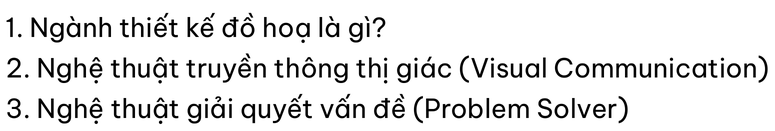
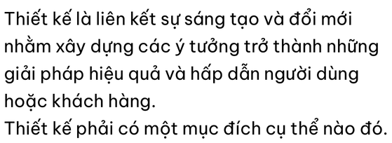

Cùng ảnh đầu vào, ngôn ngữ và chế độ OCR; chỉ thay kích thước pixel. Không tự chấm độ chính xác hoặc chọn kết quả tốt nhất.
Trình duyệt có thể thu ảnh để vừa màn hình. Hãy xem số pixel để biết kích thước thực tế gửi cho OCR.
1. Ngành thiết kế đồ hoa lờ gì? 2. Nghệ thuột truyền thông thị giác (Visual Communication) 3. Nghệ thuột giỏi quyết vốn đề (Problem Solver)
Chạy xong; cần đối chiếu chữ với ảnh gốc.
1. Ngành thiết kế đồ hoa lờ gì? 2. Nghệ thuột truyền thông thị giác (Visual Communication) 3. Nghệ thuột giỏi quyết vốn đề (Problem Solver)
Chạy xong; cần đối chiếu chữ với ảnh gốc.

1. Ngành thiết kế đồ hoa là gì? 2. Nghệ thuột truyền thông thị giác (Visual Communication) 3. Nghệ thuột giải quyết vấn đề (Problem Solver)
Chạy xong; cần đối chiếu chữ với ảnh gốc.
Thiết kế lờ liên kết sự sóng tạo vờ đổi mới nhằm xôy dựng cdc ý tưởng trở thành những giỏi pháp hiệu quỏ va hốp dẫn người dùng hoặc khách hang. Thiết kế phởi có một mục đích cụ thể nào đó.
Chạy xong; cần đối chiếu chữ với ảnh gốc.
Thiết kế la liên kết sự sóng tạo và đổi mới nhằm xôy dựng cóc ý tưởng trở thành những giỏi pháp hiệu qué va hdp dẫn người dùng hoặc khóch hàng. Thiết kế phỏi có một mục đích cụ thể nào đó.
Chạy xong; cần đối chiếu chữ với ảnh gốc.

Thiết kế lờ liên kết sự sóng tao va đổi mới nhằm xdy dựng cdc ý tưởng trở thành những giải phdp hiệu qué và hấp dẫn người dùng hoặc khóch hang. Thiết kế phỏi có một mục đích cụ thé nao đó.
Chạy xong; cần đối chiếu chữ với ảnh gốc.